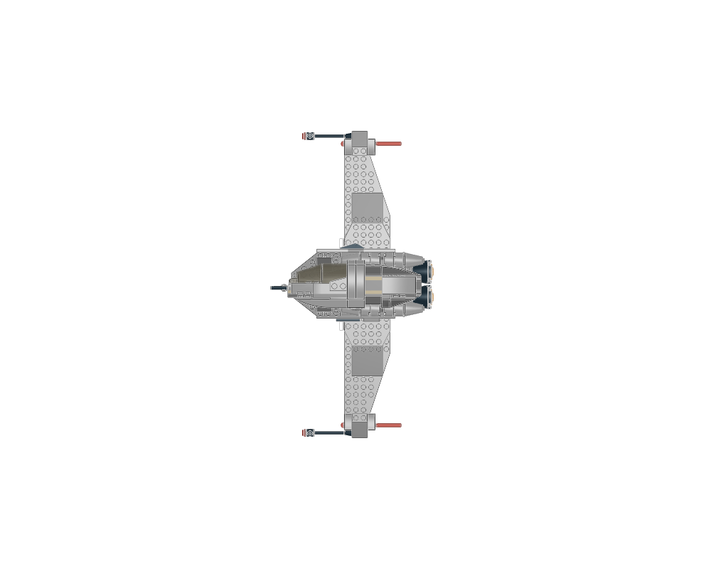
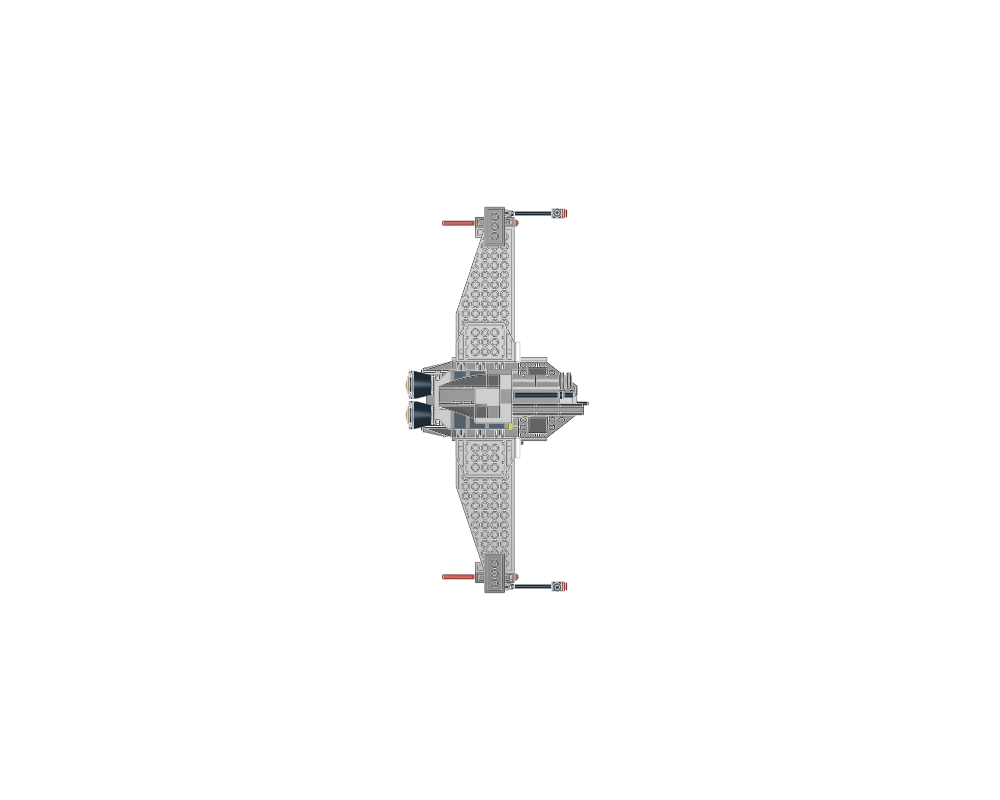
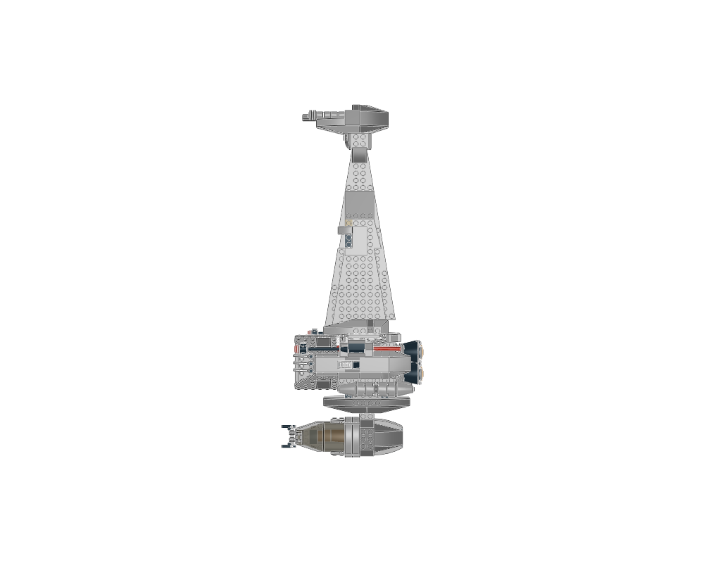

Build a distinctive asymmetric starfighter around a narrow spine and separate wing masses.
construction
Study cockpit mass, long blade, smaller side wings, engine block and detailed wing ends as separate design roles.
interfaces
Preserve wing-root and engine attachments; the model is delivered in its source pose, with no claim of working articulation.
parent context
Full model includes the supplied parent assembly.
reuse notes
Adapt the silhouette and module interfaces deliberately; keep real canopy, engine and wing parts rather than replacing their forms with rectangular slabs.
home

front

back

top
Sections to study separately
Use manual prepare on a selected source section to create its build pages.